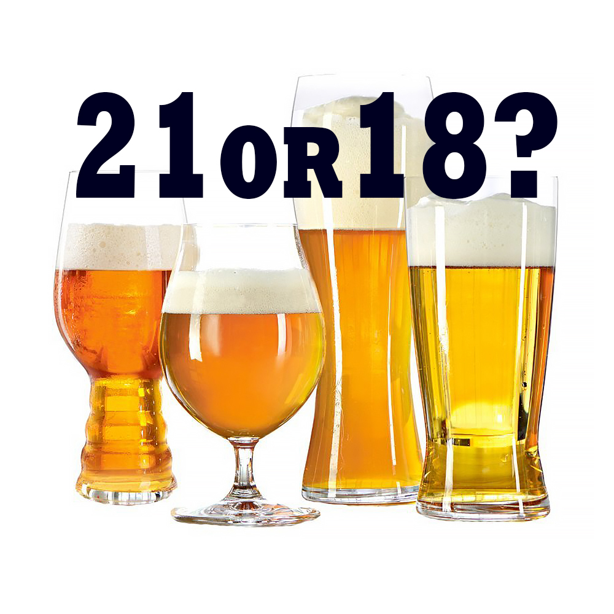
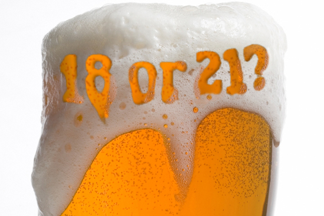

Should the Drinking Age Be Lowered from 21 to a Younger Age in the United States?
by Ivan Marenich
There are fewer drunk driving traffic accidents and fatalities in many countries with minimum legal drinking age(MLDA) of 18.

In the United States, 31% of road traffic deaths involve alcohol. This percentage is higher than many countries with a drinking age lower than 21 such as France (29%), Great Britain (16%), Germany (9%), China (4%), and Israel (3%). Although the United States increased the MLDA to 21 in 1984, its rate of traffic accidents and fatalities in the 1980s decreased less than that of European countries whose legal drinking ages are lower than 21.
MLDA 21 reduces traffic accidents and fatalities.

100 of the 102 analyses (98%) in a meta-study of the legal drinking age and traffic accidents found higher legal drinking ages associated with lower rates of traffic accidents. In the 30 years since MLDA 21 was introduced, drunk driving fatalities decreased by a third. The National Highway Traffic Safety Administration (NHTSA) estimates that MLDA 21 has saved 31,417 lives from 1975-2016.